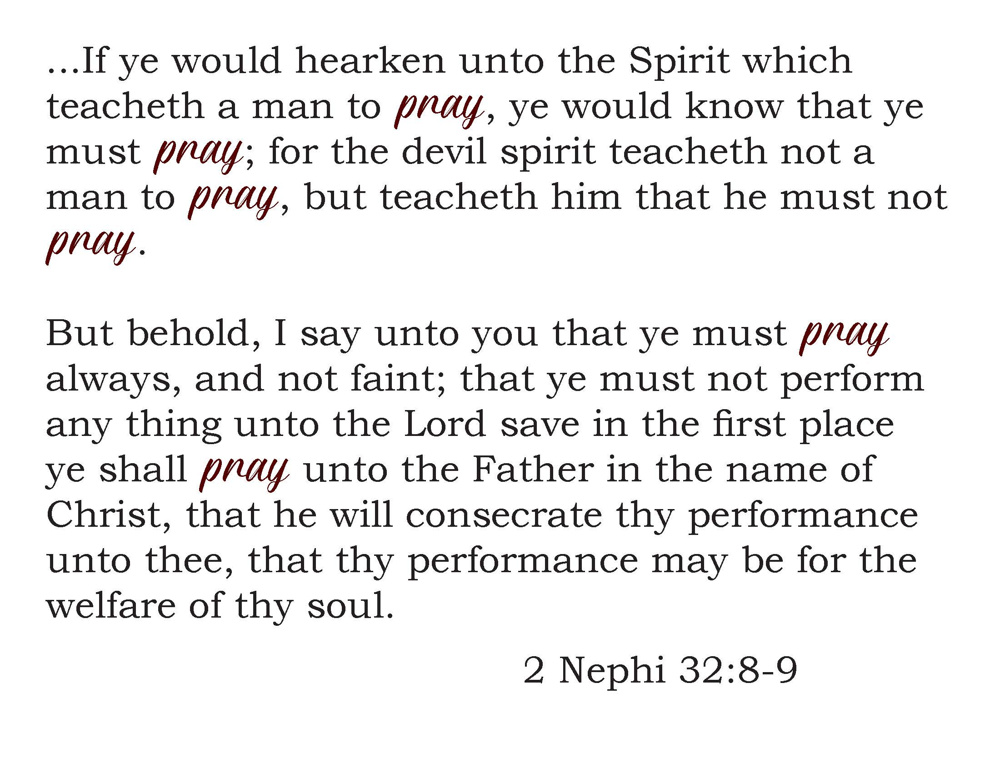

Throughout the semester, I will be completing a Discipleship Project. In October 2015 General Conference, Elder Larry R. Lawrence gave an excellent talk entitled What Lack I Yet He talks about being on a "course of steady improvement" and asks some questions of the listener. As I reflect on my life, I have not really been on a course of steady improvement for a while now. I feel very stagnant and disconnected.
What Do I Need to Change?
As I pondered this question of his, I felt strongly that I definitely need a change in my life. No matter how I try to think of something super special or unique to take on a project, I keep coming back to my prayers. I teach my children to pray and pray with them at bedtime and meals and during hard times, but I rarely practice the principle for myself when I'm alone. This is what I need to change.
How Can I Improve?
Aside from simply engaging in prayer, I also need to improve the prayers that I do say. I can pray out loud. I can set aside time to pray so that I do not feel rushed. I can make sure to pray earlier in the day than bedtime. It is so very easy to skip prayers when you are already tired.
I want to improve my ability to receive and understand revelation. A personal question has arisen that I feel the only way to know for sure the correct course is through personal revelation, but I feel I have drifted too far from where I need to be to receive it.
I was particularly touched by President Oaks’ talk Two Lines of Communication. “…some seek to have their priesthood leaders make personal decisions for them, decisions they should make for themselves by inspiration through their personal line.” My question should not be presented to any priesthood leader for an answer- I need to go straight to the source of all knowledge, but I also need to be prepared to receive the answer. “The direct, personal channel of communication to our Heavenly Father through the Holy Ghost is based on worthiness…” While I don’t feel that I’ve done anything really wrong, I have certainly neglected to do some things right.
2 Nephi 32:8-9 reminds me that the feelings I have that prevent me from praying from not from God. Combine that with 2 Nephi 2:26, where we are taught that Jesus Chris redeemed us from the fall, making us free to act for ourselves, and not to be acted upon. As I let the things of my life interfere with my prayers, I am allowing myself to be acted upon by that "evil spirit" instead of acting for myself.
I am certain that I will meet with greater opposition as I work on this goal. I anticipate negative feelings – too tired, too irritated, too hurried, not interested, just don’t want to. To help combat some of this, I will not wait until the end of the day to pray. Night always feels so rushed, that it’s easy to skip prayer. Instead, I think that the mornings before I need to take care of children, and early afternoons when the kids are done with school and there is less demand on my time, would be the best times to avoid the majority of the excuses I tend to give myself. I also printed out part of the afore mentioned verses and hung it near my bed where it will be seen frequently to remind myself to overcome my excuses as they are not from God.
